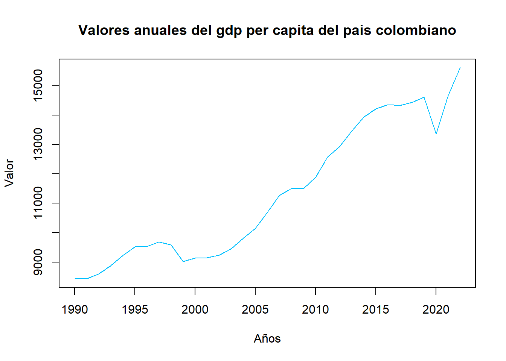
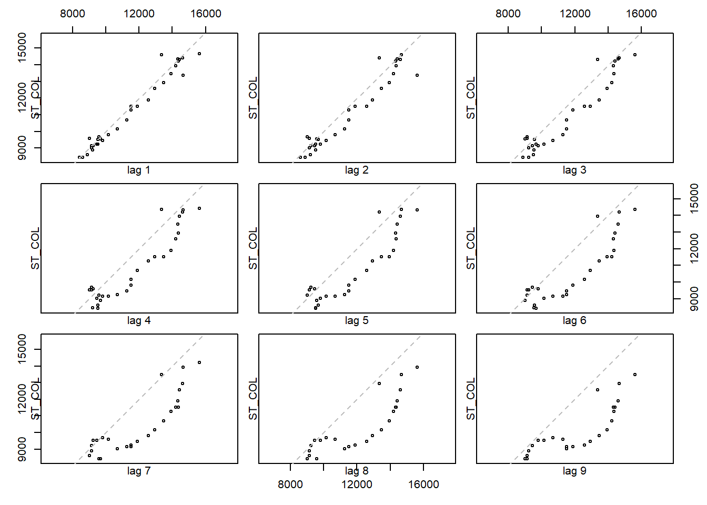
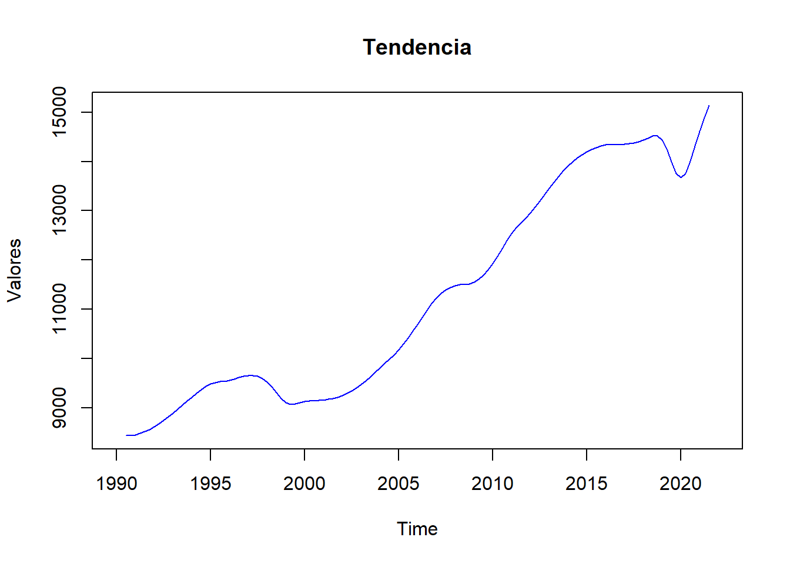
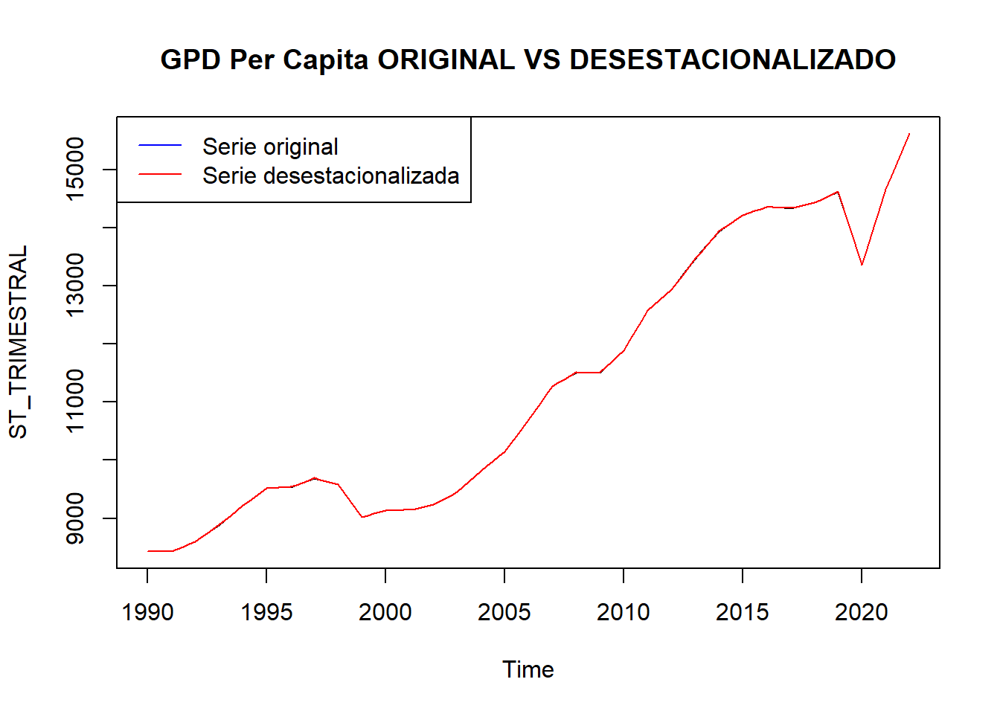

Chapter 2 Preparacion de la serie
Comenzamos entonces haciendo estudios primarios a nuestros datos. Comenzamos cargando algunas librerias de interes
library(forecast)
library(tseries)
library(ggplot2)
library(changepoint)
library(readxl)
library(dplyr)
library(zoo)
library(dygraphs)
library(seasonal)
library(TSA)
library(prophet)## Warning: package 'prophet' was built under R version 4.4.22.1 Evaluacion de nuestra serie de tiempo inicial
Empezaremos definiendo una serie de tiempo en los datos relacionados al ‘GPD per capita’:
Los datos son tomados de forma anual entonces nuestra serie de tiempo mantendra el mismo formato de tiempo (En años).
la fecha de interes sera a partir de 1990 (ligado a la crisis de exportaciones) y la fecha de finalizacion sera en 2022 (ligado al fin de la pandemia y al inicio del conflicto rusia-ucrania)
gpd_data <- read.csv("gpd_per_capita.csv")
gdp_colombia <- gpd_data %>%
filter(Entity == "Colombia")
Datos <- gdp_colombia$GDP.per.capita..PPP..constant.2017.international...
ST_COL <- ts(Datos, frequency=1, start=c(1990))## Time Series:
## Start = 1990
## End = 2022
## Frequency = 1
## [1] 8434.959 8430.223 8598.992 8885.187 9220.502 9518.260 9538.272
## [8] 9691.028 9578.656 9023.621 9138.319 9146.405 9232.627 9453.328
## [15] 9816.277 10150.708 10692.728 11272.578 11507.525 11507.717 11890.203
## [22] 12578.016 12934.966 13465.075 13938.231 14215.688 14358.168 14334.915
## [29] 14426.435 14616.135 13358.298 14661.213 15616.752Veamos datos generales
## Min. 1st Qu. Median Mean 3rd Qu. Max.
## 8430 9233 10693 11310 13465 15617## [1] 11310.06## [1] 5318247Se observan 3 cosas:
El Maximo ‘GDP per capita’ registrado en la historia del pais (hasta 2022) es de 12617, contrario al minimo reghistrado que es de 8430
El promedio registrado a travez de los años es de aproximadamente 11310 luego observamos la serie de tiempo en forma de grafica
La varianza es notablemente alta e indica que los datos estan muy dispersos alrededor del promedio, lo que indica que este ultimo no es un indicador recomendado para determinar el comportamiento que tendra el pais respecto a esta metrica en los años que vienen
Viendo el grafico de la serie de tiempo
plot(ST_COL, main=" ", ylab="Valor",col="deepskyblue",xlab="Años")
title(main="Valores anuales del gdp per capita del pais colombiano")
En el grafico podemos evidenciar una creciente tendencia de los valores a partir de 1990, eso es obvio dado que a partir de estos años posteriores se han ido incrementando mas el proceso de globalizacion con el tema de exportaciones y aperturas del comercio que se afianzaron con los años. Sin embargo podemos evidenciar tambien en la grafica dos desaceleraciones notables:
Entre 1998 y 2000, la explicacion historica a esta desaceleracion fuerte se da a que durante estas epocas el pais estuvo azotado por multiples conflictos entre el ejercito, las autodefensas y las FARC, destinando la mayor parte de los recursos del estado al ejercito y a la asistencia de las multiples victimas civiles sufridas
Entre 2019 y 2020, la explicacion historica a esta aun mas fuerte desaceleracion se da a un fenomeno mundial, claramente la pandemia por covid-19 que puso en jaque la economia global de la cual colombia tuvo que cerrar multiples importaciones y exportaciones como medidas preventivas
Ahora, no es suficiente solo concretar nuestra base de datos en una serie de tiempo. Es vital determinar si nuestros datos presentan estacionalidad o no (concretamente, si nuestra base de datos presenta ciertos patrones recurrentes que se repiten en ciertos intervalo de tiempo).
Para esta primera deteccion usaremos una grafica de rezagos
Para esta tarea usaremos la funcion lag.plot y nos apegaremos a hacerlo en 9 rezagos

Viendo cada rezago de manera cuidadosa, podemos observar un comportamiento identificable en el grafico 1, mas especificamente una alineacion diagonal. Esto nos indica que existe la posibilidad de que nuestra serie de tiempo presente una tendencia, sin embargo, este comportamiento no se vuelve a repetir en los otros rezagos y no se identifica mas comportamientos identificables en las otras graficas, por ende podemos decir que nuestros datos no presentan un patron estacional concreto o que la estacionalidad es muy debil
Que significa esto? que hay que eliminar los componentes estacionales debiles de nuestro modelo, pues estos no presentan algun aporte ni ninguna diferencia significativa frente a datos que no lo tienen.
El siguiente paso seria filtrar el comportamiento estacional de nuestra serie de tiempo. Sin embargo hay un problema y es que nuestra serie de tiempo es anual, esto dificultaria mas la tarea ya que la estacionalidad usualmente se presenta en intervalos mensuales o a lo mucho trimestrales, lo que complica mas el proceso de depuracion, sin embargo hay una solucion a esto y es crear una nueva serie de tiempo de frecuencia trimestral usando datos aproximados a partir de los originales.
Investigando un poco mas, el paquete ‘zoo’ nos permite crear datos adicionales usando tecnicas de interpolacion. Esto es muy util ya que estos datos sirven como aproximaciones que pueden añadirse en nuestra serie de tiempo original, para poder convertirla luego en una serie de tiempo ya sea trimestral o mensual que es lo que buscamos.
2.2 Una Nueva Serie de tiempo
El primer paso es convertir nuestra serie en un objeto de tipo ‘zoo’, esto para volverla una serie de tiempo flexible y poder aplicarle las tecnicas de interpolacion
A continuacion utilizaremos interpolacion lineal para crear datos aproximados y definir la serie equivalente en tiempos trimestrales. Hay que tener en cuenta que usamos interpolacion lineal porque es el metodo de interpolacion mas sencillo que ofrece el paquete Zoo y porque concuerda mejor con la aproximacion diagonal que presento el primer retazo en la serie de graficos anteriores, luego definimos la nueva serie de tiempo de frecuencia trimestral debido a que es el periodo de tiempo que mas se acerca a los datos anuales, tampoco buscamos tentar mucho el nivel de aproximacion que podamos obtener al crear muchisimos datos entre cada dato original.
# Crear una secuencia de fechas trimestrales(a partir de las funcion as.Date mostrada en los contenidps)
start_year <- as.Date("1990-01-01")
end_year <- as.Date("2022-12-31")
Fechas <- seq(from = start_year, to = end_year, by = "quarter")#Esta funcion crea un vector de fechas trimestrales, encontrado por investigacion
#Se crea una serie de tiempo vacia que tiene como frecuencias las fechas trimestrales que creamos
COL_zoo_trimestral <- zoo(NA, order.by = Fechas)
#Se va llenando la nueva serie con los datos ANUALES de nuestra serie original, pero los trimestres entre los años siguen vacios
for (i in 1:length(años)) {
year_start <- which(index(COL_zoo_trimestral) == as.Date(paste(años[i], "01-01", sep = "-")))
COL_zoo_trimestral[year_start] <- ST_COL[i]
}
#Finalmente se lleman los datos trimestreales con aproximaciones por interpolacion lineal usando los datos anuales
COL_zoo_trimestral <- na.approx(COL_zoo_trimestral)Para mayor comodidad en la visualizacion de graficas (ya que ahora si contamos con mas datos), usaremos la libreria dygraphs, una libreria de visualizacion de series de tiempo propuesta en el debate ‘Visualizacion de series de tiempo’
## Index COL_zoo_trimestral
## Min. :1990-01-01 Min. : 8430
## 1st Qu.:1998-01-01 1st Qu.: 9294
## Median :2006-01-01 Median :10693
## Mean :2005-12-31 Mean :11293
## 3rd Qu.:2014-01-01 3rd Qu.:13682
## Max. :2022-01-01 Max. :15617Sin embargo nuevamente recordemos que trabajamos con datos aproximados asi que aunque las graficas se parezcan, aun habra ligeras diferencias comparadas con la realidad.
Volvemos a convertir los datos a una serie de tiempo de tipo ts
Luego descomponemos la serie, analicemos su tendencia
COL_DECOMP <- decompose(ST_TRIMESTRAL) #Descompone la serie en tendencia, estacionalidad y ruido
plot(COL_DECOMP$trend, main = "Tendencia", col = "blue", ylab = "Valores")
Aqui la serie es mayormente creciente(salvo por algunas fluctuaciones en secciones especificas) lo que evidencia una tendencia positiva SALVO en una caida abrupta y significativa, producto de un evento particular que afecto profundamente el comportamiento constante de los datos (Dicho evento claramente es la pandemia)
Ajustemos la serie ahora por desestacionalidad para eliminar todo rastro de estacionalidad que la serie posee (ya que no es significativo trabajar con ella)
EST_COL <- seasadj(COL_DECOMP) # Elimina el componente estacional de la serie, devolviendola sin estos efectos
plot(ST_TRIMESTRAL,main ="GPD Per Capita ORIGINAL VS DESESTACIONALIZADO")
lines(EST_COL, col = "red")
legend("topleft", legend = c("Serie original", "Serie desestacionalizada"), col = c("blue", "red"), lty = 1)
Luego podemos ver que el grafico desestacionalizado es exactamente igual al grafico original (salvo por unas minusculas diferencias que destacan a simple vista ), esto es obvio ya que en el analisis al grafico de rezagos, concluimos que la estacionalidad presente en nuestros datos era tan debil que no haria diferencia alguna si la eliminamos.
Con esto ultimo listo ya es hora de poder proponer distintos modelos que nos ayuden a explicar el comportamiento de nuestra serie de tiempo esperando en lo mejor posible, encontrar el que mejor se ajuste a los datos y al que podamos aplicarle analisis de prediccion
NOTA: NO se planea hacer predicciones usando los modelos propuestos aun hasta que llegue la hora de compararlos entre si y evaluar el alcance y precision de su prediccion frente a otros.